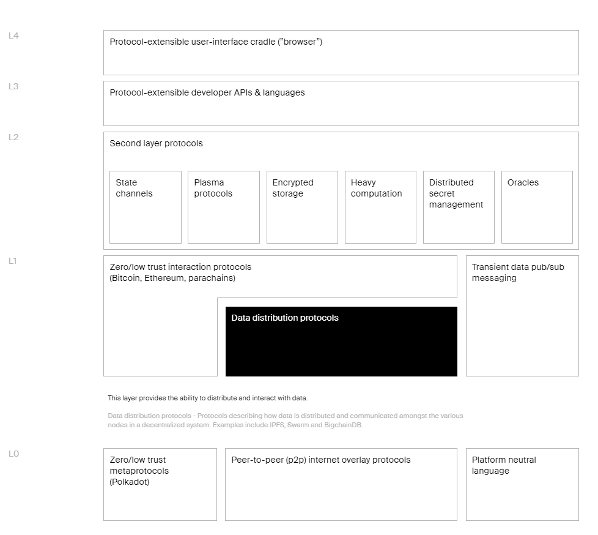
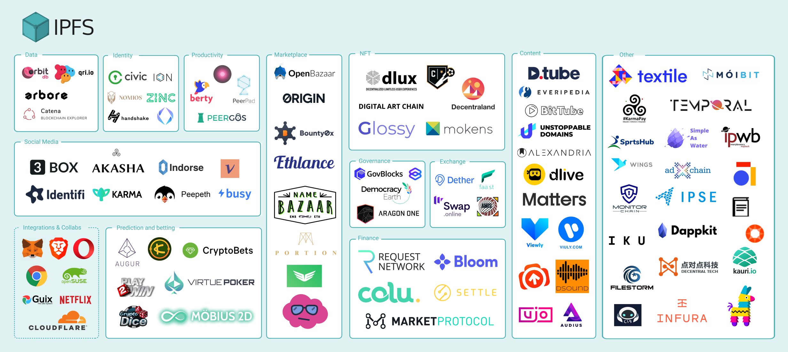

Web x.0 or Neuromancer
Web 3.0
There is a lot of buzz about Web 3.0 out there and Its not new. When people got used to the term Web 2.0, academics, experts and sales teams had already started publishing their articles on this extremely compelling subject. The oldest article that I can find is from 2005 with the title “What to expect from Web 3.0”.
If I look at the year 2005, the world was different. We were like most of the world, trying to build for the Web. Shifting our mind, businesses and customers. And of course programing languages, tools were getting there.
I think everything in that article has already been achieved and on top of that foundations of Web x.0 has been laid.
What is this buzz about?
I believe there are 2 different noise out there.
Its said one is played by the big tech companies which are innovating AI and accelerating the speed of automation (Google in Trouble). They are trying to get rid of the dependency on people for running their businesses. Instead, they want to use people and milk their data for their Perpetual Motion Machine. On the other hand, they are expecting governments or NGO’s to invent new jobs for these people on the big tech infrastructure. I mean jobs like “Influencer”, “SEO Optimizer”, “Podcaster”, “Youtuber” etc.
Its said the other buzz is about distribution and sharing by disrupting and innovating money, governance, infrastructure, privacy, data and probably everything we know provided by the big tech and governments. Their tech is open. It is like season 2 of the GNU movement. Reading the documents of this tech its like reading Neuromancer;
“We have sealed ourselves away behind our money, growing inward, generating a seamless universe of self.” William Gibson, Neuromancer
What does it look like
There are many projects out there. Some of them are widely known. But I am not going to write about cryptocurrencies but cryptocurrencies are part of this Web x.0 infrastructure. Although, due to the investors, I am a little bit distant to Polkadot, the most complete representation of this Web x.0 is from their foundation site

InterPlanetary Filesystem
Since last year I am following up closely on the IPFS project. Which is less sci-fi but learning curve is complex;
“Don’t let the little fuckers generation gap you.” William Gibson, Neuromancer
If you are familiar with p2p network concepts, the first part of the documentation will be less interesting. But when you start to read concepts like “Merkle Distributed Acyclic Graphs” prepare yourself for confusion and luckily there are bananas there for people like me.
Main Components of IPFS
There are three fundamental principles to understanding IPFS:
Unique identification via content addressing: Every piece of content that uses the IPFS protocol has a content identifier, or CID and IPLD.
Content linking via directed acyclic graphs (DAGs): IPFS uses a Merkle DAG that is optimized for representing directories and files. To build a Merkle DAG representation of your content, IPFS often first splits it into blocks. Splitting it into blocks means that different parts of the file can come from different sources and be authenticated quickly.
Content discovery via distributed hash tables (DHTs): To find which peers are hosting the content you’re after (discovery), IPFS uses a distributed hash table or DHT. A hash table is a database of keys to values. A distributed hash table is one where the table is split across all the peers in a distributed network. To find content, you ask these peers.
As IPFS is providing high throughput, low latency, data distribution, its already ready for Web x.0 applications. For the last 3 weeks, I was working for a project on IFPS. I will write another post for it later. This is how the landscape looks like in 2019;

For me the question is not when but how IPFS, distributed web and decentralization will disrupt the future, because its already here.
“Cyberspace. A consensual hallucination experienced daily by billions of legitimate operators, in every nation, by children being taught mathematical concepts … A graphic representation of data abstracted from the banks of every computer in the human system.” ― William Gibson, Neuromancer